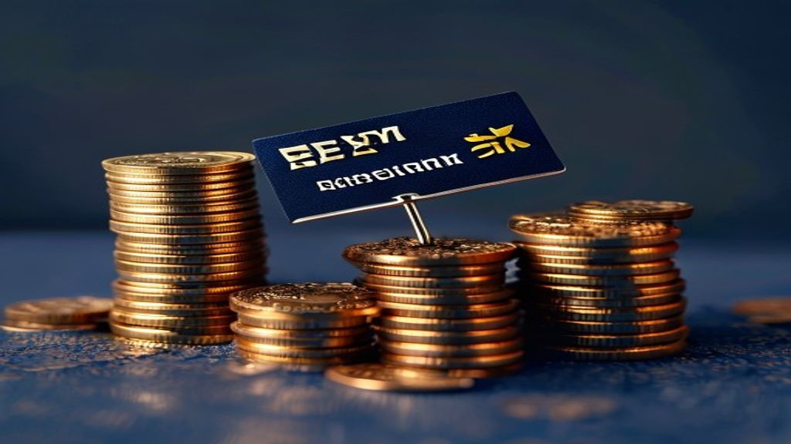

Result Analysis
Plain-English reads of company earnings and sector moves.
Britannia's Q1 FY27: Easing Concerns, Navigating Costs
Britannia Industries' Q1 FY27 results indicate an easing of the dual-pricing issue, leading to improved sales volumes. This recovery in volumes has helped the.
Navigating Tech Earnings: When 'Good Enough' Isn't Enough
Recent tech earnings season saw many companies report strong results, yet their stock prices often fell. Investors are increasingly scrutinising growth prospe.
LIC Q1 Results Explained: What Investors Need to Know
LIC reported a robust 22.8% year-on-year increase in net profit, reaching ₹13,492 crore for Q1 FY27. The Value of New Business (VNB) surged by 61.3% to ₹3,136.
Market Downturn: Geopolitical Tensions & Earnings Weigh on Stocks
Global stock markets recently saw a downturn, influenced by ongoing geopolitical concerns in the Middle East. Investor sentiment was also cautious as companie.

Decoding Palantir's Q2 2026 Earnings Expectations
Palantir Technologies (PLTR) is expected to announce strong Q2 2026 results, driven by robust demand for its AI platforms. Analysts anticipate significant yea.

Maruti Suzuki's Q1 FY27: Navigating Headwinds Towards Growth
Maruti Suzuki's Q1 FY27 saw strong revenue and volume growth, but profitability was impacted by high input costs. Operating revenue surged 36% year-on-year to.

Amazon's Strong Earnings Drive Wall Street Surge Amidst AI Optimism
Amazon reported exceptional Q2 2026 results, with revenue reaching $200.6 billion, significantly beating analyst estimates. Amazon Web Services (AWS) revenue .

CBDT's New Crypto Reporting Guidance: What Investors Need to Know
The Central Board of Direct Taxes (CBDT) has issued guidance aligning India's crypto reporting with global OECD standards. This framework focuses on how crypt.

American Express: Strong Revenue, Rising Costs & Investor Sentiment
American Express reported a 10% increase in quarterly revenue, reaching $19.6 billion. Total card spending, or billed business, grew 9% year-over-year to $455.
Intel (INTC) Stock Q2 2026 Earnings Preview: What to Expect
Intel is set to announce its Q2 2026 earnings after market close on July 23, 2026, with analysts expecting modest profitability and revenue growth. Consensus .
Servotech Renewable Power System Q1: PAT Jumps 75%, Revenue Up 58%
Servotech Renewable Power System reported a significant 57.7% year-on-year (YoY) increase in revenue for Q1 FY27. The company's total revenue stood at ₹216.29.
BlueStone Jewellery's Q1FY27: Profitability and Strong Revenue Growth
BlueStone Jewellery reported a significant 49% year-on-year increase in retail sales, reaching ₹733 crore in Q1FY27. The company successfully turned profitabl.
Reliance Industries: Promoter Stake Hits 3-Year High in Q1FY26
Promoters of Reliance Industries Limited (RIL) significantly increased their stake to 50.5% by June 2025, marking the highest level in over three years. This .

Signature Global Q1 FY27 Pre-Sales: A Closer Look at Growth
Signature Global reported pre-sales of ₹1,970 crore for Q1 FY27, indicating strong operational activity. This figure represents a robust 25% quarter-on-quarte.

HCL Tech Q1 Results: Key Takeaways for Investors
HCL Tech reported a Q1 net profit of ₹4,626 crore, marking a significant 20% year-on-year increase. Sequentially, the company's profit grew by 3% quarter-on-q.

Why Large & Mid Cap Funds Look Promising Now: An Abakkus View
An Abakkus Mutual Fund study suggests Large & Mid Cap Funds are an attractive investment category currently. The study highlights improving corporate earnings.

TCS Q1 FY27 Earnings: Navigating Growth Amidst Margin Pressures
Tata Consultancy Services (TCS) reported a consolidated net profit of ₹13,349 crore for Q1 FY27, a 4.6% year-on-year increase. Revenue from operations grew 14.

TCS Q1 Results: Board declares an interim dividend of ₹12 per share. Details here
Tata Consultancy Services (TCS) reported a robust start to FY25 with healthy revenue and profit growth in the June quarter. The company's Board of Directors h.
Indian IT Faces H1FY27 Headwinds: Decoding Corporate Challenges
Indian IT companies are grappling with significant challenges, leading to a projected 'washout' first half of FY27. The rapid advancements in Artificial Intel.
Paying LIC Premiums Online: A Step-by-Step Guide
Paying your Life Insurance Corporation (LIC) premiums online offers unparalleled convenience, allowing payments anytime, anywhere. LIC provides multiple digit.

Adani Green Energy Q1FY27 Results: What to Watch For
Adani Green Energy's Board will meet on July 22, 2026, to approve its Q1FY27 financial results. For the March-ending quarter (Q4FY26), the company reported a .

HDFC AMC's Upcoming June Quarter Results: What Investors Should Watch
HDFC Asset Management Company (AMC) will announce its financial results for the June 2026 quarter on July 15, 2026. The company's trading window for shares wi.

Micron Shares Surge on Blockbuster Earnings: How Indians Can Invest
Micron Technology reported record-breaking Q3 FY2026 results, with revenue of $41.46 billion and adjusted EPS of $25.11, significantly exceeding analyst expec.

Micron's Strong Earnings Drive Asian Stock Rally
South Korea's Kospi index surged over 5% at market open, while the small-cap Kosdaq gained 1.32%. Japan's Nikkei 225 index also saw a significant rise, climbi.

TCS Q1FY27 Results & Interim Dividend: What Investors Need to Know
Tata Consultancy Services (TCS) is set to announce its Q1FY27 financial results on July 9, 2026. The company's board will also convene on the same date to con.
PhonePe Inactivity Fee: Avoid the ₹100 Quarterly Charge
PhonePe has introduced a ₹100 quarterly inactivity fee for wallets that have not recorded any financial transaction for 365 consecutive days. This fee will be.
NSE's FY26 Earnings: A Reality Check Before Its ₹30,000-Crore IPO
The National Stock Exchange (NSE) reported a significant 16% drop in net profit for FY26, falling to ₹10,302 crore from ₹12,188 crore in FY25. Operating margi.
Analyzing Paras Defence's Share Price Outlook for 3 Years
Paras Defence and Space Technologies reported strong Q4 FY26 results with significant revenue and profit growth. Consolidated revenue for Q4 FY26 increased by.
Decoding Paras Defence's Future: A 3-Year Outlook
Paras Defence & Space Technologies reported a strong Q4 FY26, with consolidated net profit rising 74.3% year-on-year to ₹34.4 crore. Revenue from operations a.
Oracle's Q4 Earnings Preview: AI Backlog, OCI Growth & ORCL Stock
Oracle's Q4 FY2026 earnings are expected to highlight significant growth driven by AI demand and its cloud infrastructure. Analysts anticipate a 20% year-over.
Citi's S&P 500 Target Hike: What it Means for Indian Investors
Citi has significantly raised its year-end S&P 500 target to 8100, indicating a bullish outlook for the US equity market. This upward revision is primarily at.
P/E vs PEG Ratio: Deeper Insights into Valuation & Growth
The Price-to-Earnings (P/E) ratio indicates how much investors are willing to pay for each rupee of a company's earnings. The P/E ratio is a fundamental valua.
Financial Stress Management: Practical Ways to Ease Money Anxiety
Understanding your current financial situation is the foundational step to reducing money-related anxiety. Creating and sticking to a realistic budget empower.
HPE Q2 FY26 Earnings: AI Demand Drives Record Backlog & Guidance Raise
Hewlett Packard Enterprise (HPE) reported a strong Q2 FY26, with revenue up 40% year-on-year to $10.7 billion, significantly beating estimates. Non-GAAP dilut.

Understanding Loan Risks: Impact on Borrowers & Guarantors in India
Acting as a loan guarantor makes you equally liable for the debt if the primary borrower defaults. A loan default by either the borrower or guarantor can seve.

Analysing GRM Overseas' Q4 FY26 Performance and Outlook
GRM Overseas will be in focus on Monday after reporting its Q4 FY26 and full-year results. The company showcased strong revenue growth for the financial year .

Reliance Industries: Decoding FY26 Dividend and AGM Impact
Reliance Industries' 49th Annual General Meeting (AGM) is scheduled for June 19, 2026. The record date for determining eligibility for the FY26 dividend has b.

Suzlon Q4 Results: Profit Dip, Revenue Up – What It Means
Suzlon Energy reported a 6% year-on-year dip in Q4 FY24 consolidated net profit to ₹281 crore, primarily due to exceptional items in the previous year. Despit.

Can Nifty 50 Reach 30,000 by FY27? Smallcase Managers Bullish
Smallcase managers project the Nifty 50 index could reach 28,000-30,000 by the end of Fiscal Year 2027. This optimistic outlook persists despite a significant.
Hindalco Q4 Results: Profit Dips 31.6% to ₹2,597 Cr; ₹5 Dividend
Hindalco Industries reported a consolidated net profit of ₹2,597 crore for the fourth quarter of FY24. This represents a 31.6% year-on-year decline from the ₹.
Auto Ancillary Stocks: Finding New Growth Gears Beyond EVs
The Indian automotive ancillary sector is poised for significant growth driven by premiumization and the shift to Electric Vehicles (EVs). Companies like Uno .
Understanding Midcap & Smallcap Outperformance in 2026
Small and mid-cap stocks have significantly outperformed large-cap stocks in India during 2026. The Nifty Smallcap 100 and Nifty Midcap 100 indices recorded p.